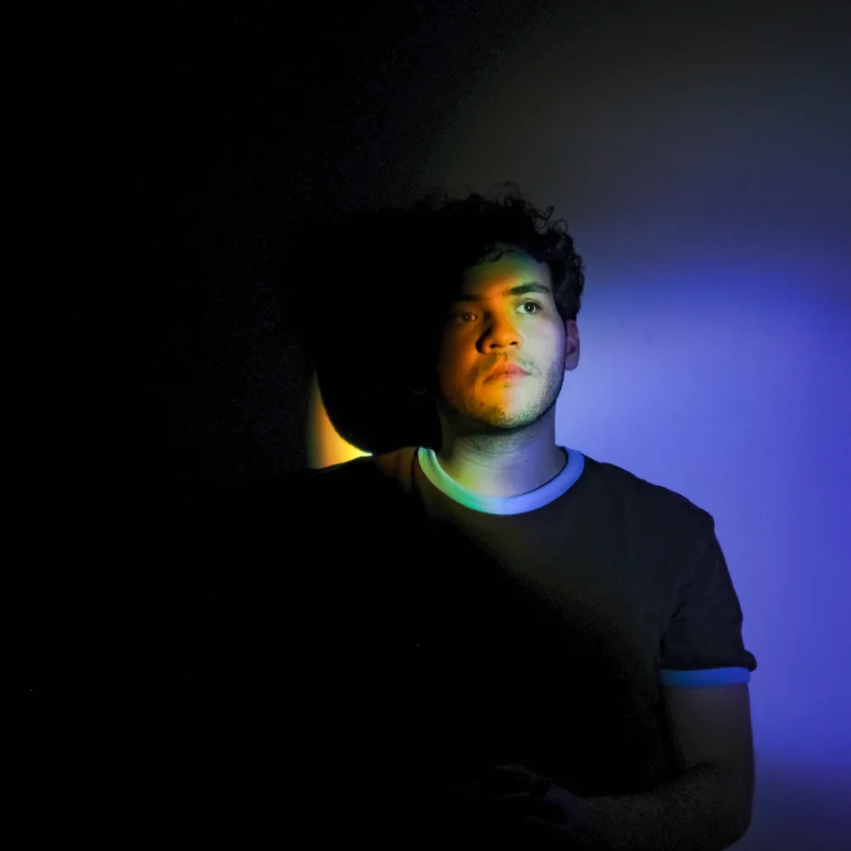
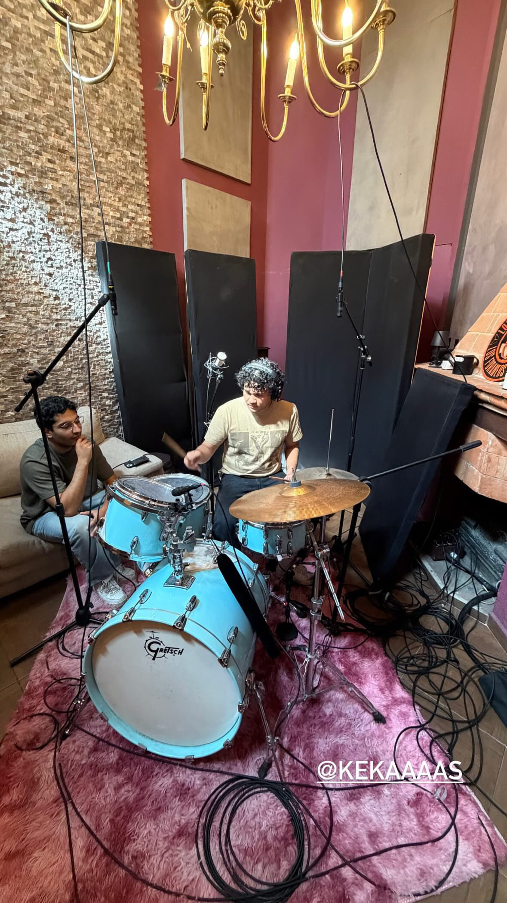

Producer in Mexico City
Unreleased demos, already registered. Beats available to license or to develop into full songs.
From a voice memo to a finished record: arrangement, sound and direction built around the song.
Clear, warm mixes that keep the emotion of the performance at the front.
Final polish and loudness for streaming, vinyl and radio, consistent across a whole release.
Session recording plus audio post for film and live TV, on location or in the studio.

Photo: Roberta SuarezMy artist project
After years of making records for other people, I'm releasing my own songs as kekas.

I'm a producer, composer and mixing and mastering engineer based in Mexico City, working mostly in pop and folk, and also in urbano, indie and rock.
Most of my work today is production: shaping songs with artists from the first demo to the final master. Before that, I worked as a recording engineer, in live sound, and on audio for film and live TV. Those rooms taught me to work fast, listen closely and protect the performance.
Right now I'm working at a recording studio called "Los Foraneos", where I've developed even more my abilities as a producer and songwriter.